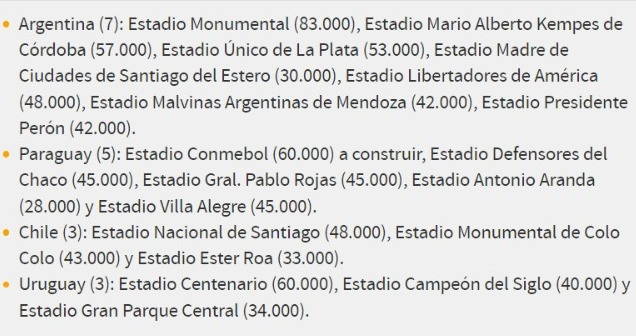
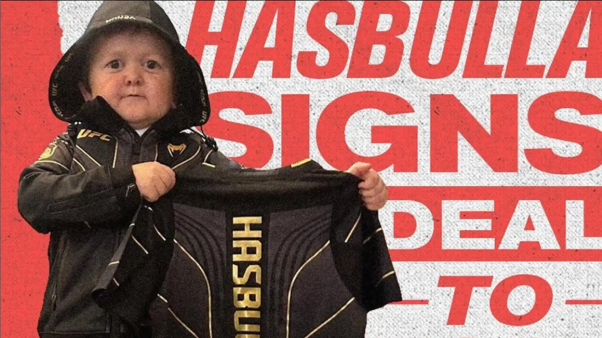

Deporte | Festejó como Cristiano y terminó saliendo en camilla: el viral que rompe Twitter |
Deporte internacional | Argentina, Paraguay, Chile y Uruguay quieren organizar la Copa del Mundo 2030, la del centenario, y este viernes se dio un gran paso.00:00 | En el 76° Congreso Ordinario de la Conmebol, que se celebró en Luque, Paraguay, el ente rector del balompié sudamericano, exhibió un video donde se detallan los estadios que serán sedes de los 104 partidos que disputarán las 48 selecciones clasificadas. |
Deporte internacional | Quién es Hasbulla, el ruso de 20 años con aspecto de niño que peleará en la UFCHasbulla nació en Majachkala (Daguestán, Rusia) con un trastorno genético.Todo el mundo está deseando ver ya a Hasbulla pelear y es que ni siquiera la enfermedad que padece se lo impedirá.Es el rey de Internet a sus 20 años y acaba de dar un salto histórico: ha fichado por la UFC y peleará dentro del octógono. |
Periodico El Faro